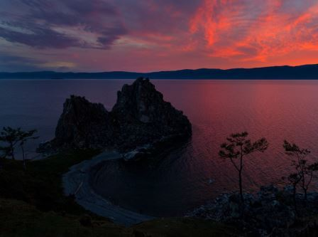

Байкал
Красота Байкала воспета многими, и увидеть его действительно стоит хотя бы дважды: в летнем наряде и в зимнем.
Нет ничего красивее пейзажей.. Оо, слушай, не хочешь посмотреть на них вместе со мной?)
Красота Байкала воспета многими, и увидеть его действительно стоит хотя бы дважды: в летнем наряде и в зимнем.
Двуглавый красавец, возвышающийся над окрестными горами – главная вершина России. Это место точно нужно увидеть хотя бы раз в жизни!
Миниатюрная и невысокая горная система, в условиях Заполярья Хибины заполучили, кажется, всё богатство природных зон.
Существует лишь одна причина посетить Сулакский каньон: он поражает свим великолепием.
Онежское озеро завораживает красотой своих лесов, величественных гор и живописных водопадов.